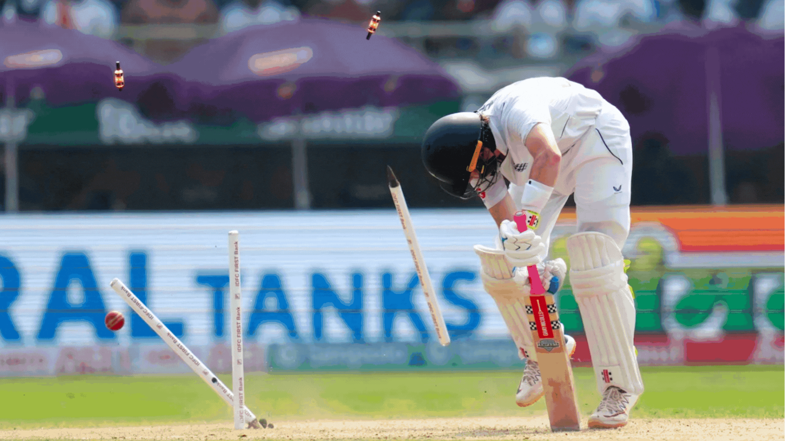

More Results, Closer Matches in Tests Now: But Will That Be Enough to Save Cricket’s 5-Day Format?
Even as Test cricket grapples with an existential crisis, an analysis of match results data reveals that the sport's longest format is a tighter contest now than it has been in a century.
By Meghnad Bose | 4 February 2024

Test cricket seems to be replete with such tight finishes nowadays. GIF Courtesy: Images by BCCI, ICC
On 28 January, as a young Shamar Joseph ripped through the Australian batting line-up and gave the West Indies a thrilling Test win Down Under, a visiting English side overcame their hosts India in the first Test of a promising series. Both matches could have swung either way until their final minutes. The eventual victory margins were a slender eight runs in Brisbane, and only twenty more in Hyderabad.
Test cricket seems to be replete with such tight finishes nowadays, and it led this correspondent to wonder, has men’s Test cricket become more exciting in recent years?
Are Tests More Exciting Now?
The first question facing us is: how do we determine or compare how exciting Test matches are over a period? Let’s look at this using two factors:
- Are more Test matches ending with decisive results instead of draws? Granted that some close draws can be thrilling to watch, but we wouldn’t want every other five-day encounter ending with no winner, right? Our first factor is, therefore, the percentage of draws in Test matches played over a given time period.
- How close were the matches? Did the team batting last win by one wicket or nine? Or did the team that bowled last win by 10 runs or 200? Typically, the smaller the margin of victory, the more exciting a match has been. Therefore, our second factor will be the margin of victory.
There’s also the question of ties - where no team wins, but the outcome is, by far, the most exciting in all of Test cricket. There have only been two tied Test matches in the 147-year history of the format!
But without further ado, let’s get to our first factor - percentage of draws.
An analysis of all Test results, from the first Test in the history of international cricket played in 1877 between England and Australia, to the last Test of 2023, shows that there have been fewer draws in Tests played in this current decade than during any other decade in the past century.
- In the 1980s, of the 266 Test matches played, 122 of them ended in draws. That’s 46.3% of all Tests played in the decade.
- But in the 2010s, out of 433 Tests played, only 84 were drawn. That’s just 19.6%, less than one in five, of all Tests in the decade.
So, on our first factor, the percentage of results in Test matches has definitely increased by leaps and bounds in recent times. Now, let’s get to the victory margins.
Tighter Matches Too
To measure the closeness of Test matches, this correspondent developed the following rubric - matching victory margins to points on a scale of 1 to 10.
- At the top of the table, with 10 points out 10, are the two tied Tests - the closest encounters in the history of Test cricket.
- At the bottom are draws, with each draw earning a solitary point on the closeness index.
- At two points out of 10 are matches that ended with an innings defeat, contests that are thoroughly one-sided affairs.
- From four to nine points are matches with varying victory margins, either in terms of runs or wickets. Matches won by a margin of more than 200 runs, or by nine or 10 wickets in hand, receive four points on the closeness index. And matches won by less than 25 runs, or by only one wicket in hand, are right up there on the index, at nine points out of 10.
Here’s the full closeness index.
| Closeness Score |
Match Result |
| 10 |
Tied test |
| 9 |
Win by less than 25 runs, or by 1 wicket |
| 8 |
Win by 25 to 49 runs, or by 2 wickets |
| 7 |
Win by 50 to 99 runs, or by 3 to 4 wickets |
| 6 |
Win by 100 to 149 runs, or by 5 to 6 wickets |
| 5 |
Win by 150 to 199 runs, or by 7 to 8 wickets |
| 4 |
Win by 200 runs or more, or by 9 to 10 wickets |
| 2 |
Win by an innings |
| 1 |
Draw |
It’s worth mentioning here that not all draws are boring matches. Close draws, where the team batting last almost reached the target or were close to getting bowled out, definitely make for exciting cricket. A limitation of the metric above is that it relegates all draws to one point. A more advanced version of the rubric could give a close draw some additional points, depending on how close the match was to a result. But for now, this rubric is what we’re operating with, and here are the results from the number-crunching.
The closeness score average for Test matches this decade is 4, last beaten in the 1910s by a score of 4.3. So, you weren’t imagining it - Test cricket has indeed become a closer contest in recent times, and quite starkly so.
__________
View the code on GitHub.